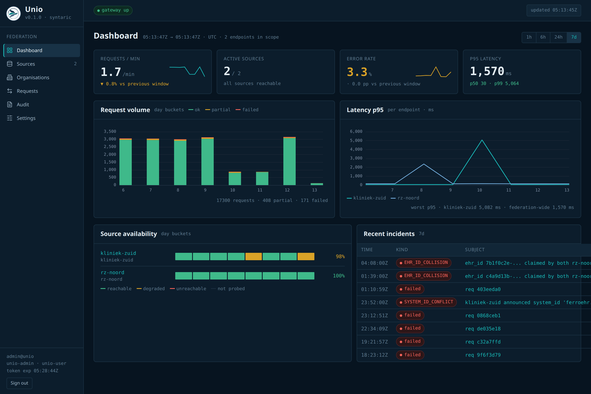
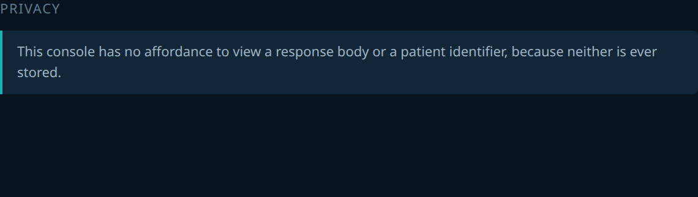

For regions with more than one openEHR CDR
One region.One record.
Your hospitals already keep good records. They keep them separately, so a patient who moves between them arrives as a stranger. Unio reads those records as one. None of them moves.
Every hospital keeps its own system and its own governance. Nothing is migrated and nothing is copied into a central store.
The situation
Good records, in separate rooms.
Regions rarely have a data problem. They have a boundary problem. The record exists. It just sits on the other side of an organisational line from the clinician who needs it right now.
The patient is the one who travels
People are treated in one town and live in another. When it matters most, an ambulance takes them to whichever hospital is nearest. Their record does not follow them.
Clinicians rebuild what already exists
Imaging is repeated. Bloods are taken again, and a medication history is pieced together from someone who is unwell. The information is in the region. It is missing from the room.
The usual remedy asks too much
Centralising every record into one store means years of migration and a governance argument with every hospital. At the end of it the region owns a single point of failure. Most programmes stall long before that.
What changes
A patient arrives somewhere new.
The same afternoon, in the same region, with and without a shared view. Nothing about the hospitals changes. What the clinician can see does.
“She was treated forty minutes up the road last winter. We had none of it, and she was in no state to tell us.” The problem a regional record actually solves,
and the one clinicians describe first.
She arrives
Admitted acutely on the far side of the region. Known to Zuid-Limburg, but not to this hospital.
Her record is found
The region's other care organisations are asked, at once, whether they hold anything for her. Two do.
It arrives as one history
One chronological record, with each entry showing where it came from. One login.
Today's care is written home
What Heerlen records stays Zuyderland's, held in Zuyderland's own system. The region can see it tomorrow.
How it differs
Nothing moves house.
A regional record usually means a migration: every hospital lifts its history into somebody else's database and hopes the mapping held. Unio asks instead. The records stay exactly where they are, in the systems that already hold them.
There is no data warehouse to build, and no second copy of the region's clinical history that has to be secured and can quietly fall out of date.
One history, not five portals.
Answers come back from several organisations at different speeds and in different orders. Unio waits. Then it sorts them into one timeline, removes the duplicates and hands over a single history.
If one of them is unreachable, the clinician is told so plainly. The record says what it is missing rather than pretending to be complete.
A partial answer that admits it is partial is safe. One that looks whole is not.
Ask by patient, not by hospital.
A clinician in Heerlen should not have to know that a patient was once treated in Maastricht in order to find the Maastricht record. They ask about the person; the region works out who holds what.
Identity is matched once, centrally and carefully. A hospital is never asked to search for someone it has no business knowing about.
The bargain
Nobody has to give anything up.
A regional record only gets built if every hospital is willing to join it. That means the terms have to be acceptable to the most cautious member, not the most enthusiastic one.
Each hospital still owns its record
Data stays in the system that created it, under that organisation's control. Joining the region is not a transfer of custody. A hospital that leaves takes nothing away from anyone else.
A record is only written by its owner
Care recorded at one hospital is written there and nowhere else. There is never a second version of the truth in another building, and never a question about which copy is current.
Who was asked, and what was shown
Every request across the region is written down. The log shows who asked and about whom, and it shows which hospitals answered. The region can show its regulator exactly how the shared record has been used.
The operator's view
What the region's operator sees.
One console for the whole region. It shows which hospitals are reachable and how quickly each one answers, and it lists every question that was asked across the boundary. There is not a single clinical fact in it.


Every question, accounted for.
Each request is recorded with who asked and which hospitals answered, down to how long each one took. The question itself is kept. The patient identifier is removed before it is written down.
There is no screen on which a response body or a patient identifier can be read, because neither is ever stored.


An outage is reported, not hidden.
Every member is probed once a minute. A slow or unreachable hospital is shown as such, and the region's answers say plainly what they could not reach.
The red cells are a real outage in the demo data, and the shaded span in the latency chart is the same forty minutes seen from the other side. The record for that period says it is incomplete.

For the hospitals joining
What it asks of your systems.
The questions a hospital IT director asks in the first meeting, answered in the order they usually come up.
Do we have to replace or migrate our CDR?
No. You keep the system you have. Unio sits in front of the region and speaks to your CDR in the standard openEHR way it already supports. There is nothing to install inside your hospital.
Do our own applications have to change?
No. Anything already built against a standard openEHR system works against the region unchanged. Nothing has to be rewritten to become “federation-aware”.
What load does this put on us?
One ordinary query per request, and only when a patient is actually being looked up. There is no bulk extract and no replication running against your database. Nothing happens overnight.
What if we are slow or offline one day?
The region carries on without you and says so. Your outage never becomes everyone's outage. The shared record says what it could not reach.
Can we leave?
Yes. Because nothing of yours was ever copied elsewhere, leaving is a configuration change. Your records are already, and only, where they always were.
Your region already has the record. Let it be read.
We will sit down with your region's hospitals and look at what each one runs today. Then we show what a shared record would look like in practice. Nobody commits to a programme first.
Unio is built by SYNTARIC on the openEHR standard, and implements the openEHR federation specification in full on the gateway side.